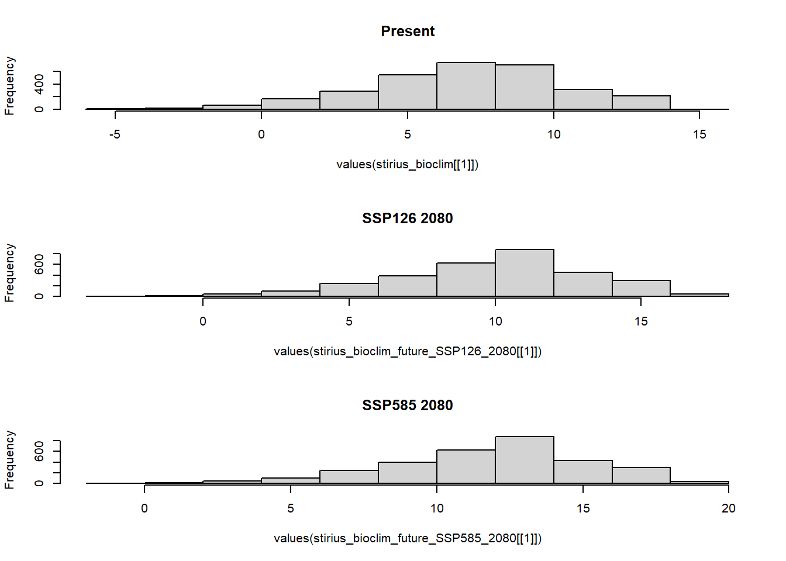

library(dplyr)
stirius_pa_final <- readRDS("01_data/stirius_pa_final.RDS")
Summary
In this lab you will:
- use R code to access the marine species occurrence data on GBIF server and download it,
- filter and select data to retain only information of interest,
- create a map of spatial points,
- learn how to simulate pseudo-absence points in areas around species presences.
Lab plan

Data import from previous labs
Data import
First, load the data that we prepared in our previous labs. The datasets are saved as .RDS files in 01_data folder, we will import them using readRDS() function and assign them to the objects with same names as in lab 2:
- Erebia stirius occurrences and pseudo absences with environmental data -
stirius_pa_final(dataframe) - E. stitirus buffer around the presence points -
stirius_buffer(Spatial poligon) - E. stirius bioclimatic background -
stirius_bioclim(raster brick)
stirius_buffer <- terra::vect(readRDS("01_data/stirius_buffer.RDS"))library(terra)
bioclim_data <- geodata::worldclim_global(var = "bio",
res = 2.5,
path = "01_data")
stirius_bioclim <- crop(bioclim_data,
stirius_buffer,
mask = TRUE)IPCC RCP and SSP Scenarios & future bio-climatic data
Intergovernmental Panel on Climate Change (IPCC) defined multiple scenarios (Representative Concentration Pathways scenarios: RCP 26, 45, 60, 85) of how greenhouse gases and other human activities will potentially influence our planet until 2100 (and beyond). The RCPs were used by Coupled Model Intercomparison Project (CMIP5) to model effects of future climate changes on environmental variables (more info: here). After 2021 IPCC report the CMIP6 was developed based on the Shared Socio-economic Pathways scenarios (SSPs) that represents advancements in RCPs. This new data became freely available through geodata package on 1st December 2022.

These scenarios take into account actions and measures for reducing emission while one scenario predicts what will happen if we continue doing everything as we are doing it now. The scenarios are then used to model the environmental changes (as in changes of Bio1 - Bio19) in different future time frames.

We will access and download future global bioclimatic variables with cmip6_world() function from geodata() package. We will use predicted bioclimatic variables (var = "bioc") on 2.5 resolution scale (~4.8 km; res = 2.5) for scenario ssp = 585 predicted with model = 'ACCESS-ESM1-5' for the years 2061-2080 and save it to an object called bioclim_future_SSP126_2080:
bioclim_future_SSP126_2080 <-
geodata::cmip6_world(
model = "ACCESS-ESM1-5",
ssp = "126",
time = "2061-2080",
var = "bioc",
path = "01_data",
res = 2.5
)names(bioclim_future_SSP126_2080)[1] "wc2.1_2.5m_bioc_ACCESS-ESM1-5_ssp126_2061-2080_1"
The name of each variable starts with wc2.1_2.5m_bioc: which tells us about the variable itself - wc2.1 means it come from WorldClim version 2.1 and 2.5m tells us it is in 2.5 arc minute resolution and bioc that it as bioclimatic dataset.
Succesive parts of the name represent:
- ACCESS-ESM1-5 comes from the
model = 'ACCESS-ESM1-5'and represents the choosen extrapolation model, - ssp126 comes from
ssp = 126and represents the Shared Socio-Economic scenario, - 2060-2081 comes from
time = 2061-2080and represents the choosen future period, - 1 - 19 denote the consecutive number of bioclimatic variable in the dataset.
Remember, for present, the variables in worldclim dataset follow nomenclature BIO1, BIO2, …, to BIO19 and the actual environmental variables behind these codes are:
- BIO1 = Annual Mean Temperature
- BIO2 = Mean Diurnal Range (Mean of monthly (max temp ‐ min temp))
- BIO3 = Isothermality (P2/P7) (* 100)
- BIO4 = Temperature Seasonality (standard deviation *100)
- BIO5 = Max Temperature of Warmest Month
- BIO6 = Min Temperature of Coldest Month
- BIO7 = Temperature Annual Range (P5‐P6)
- BIO8 = Mean Temperature of Wettest Quarter
- BIO9 = Mean Temperature of Driest Quarter
- BIO10 = Mean Temperature of Warmest Quarter
- BIO11 = Mean Temperature of Coldest Quarter
- BIO12 = Annual Precipitation
- BIO13 = Precipitation of Wettest Month
- BIO14 = Precipitation of Driest Month
- BIO15 = Precipitation Seasonality (Coefficient of Variation)
- BIO16 = Precipitation of Wettest Quarter
- BIO17 = Precipitation of Driest Quarter
- BIO18 = Precipitation of Warmest Quarter
- BIO19 = Precipitation of Coldest Quarter
And predicted bioclimatic variables (var = "bioc") on 2.5 resolution scale for scenario ssp = 585 predicted with model = 'ACCESS-ESM1-5' for the years 2061-2080 and save it to an object called bioclim_future_SSP585_2080:
bioclim_future_SSP585_2080 <-
geodata::cmip6_world(
model = "ACCESS-ESM1-5",
ssp = "585",
time = "2061-2080",
var = "bioc",
path = "01_data",
res = 2.5
)Compare present and future environmental data within research area
We create a mask that will contain bioclim variables cropped or extracted from the entire bioclim_future_SSP126_2080 and bioclim_future_SSP585_2080 only for the area of stirius_buffer. We do this with mask() function within which we set the cropped extent with crop() function - both are from raster package. We will assign the results of this actions to new objects - stirius_bioclim_future_SSP126_2080 and stirius_bioclim_future_SSP585_2080:
stirius_bioclim_future_SSP126_2080 <- crop(bioclim_future_SSP126_2080,
stirius_buffer,
mask = TRUE)
plot(stirius_bioclim_future_SSP126_2080)
stirius_bioclim_future_SSP585_2080 <- crop(bioclim_future_SSP585_2080,
stirius_buffer,
mask = TRUE)Next, lets visualise present and both future scenarios for variable Bio1 - Annual Mean Temperature. Remember, the temperature data are in °C * 10, which means that a value of 231 represents 23.1 °C. This does lead to some confusion, but it allows for much reduced file sizes which is important as for many downloading large files remains difficult.
To display 3 plots within one frame, we first set plotting parameter to par(mfrow = c(1,3)) - this means plots will be shown in one row with three equal size places. Than we run the command for each plot, remember simple way of accessing layers from raster stack can done by using double [[]] and specifying the number of the layer we want. With main = "Some text" we add a title to our plot (to distinguish what layer is displayed in which slot).
op <- par(mfrow = c(1,3)) # show three plots one next to another
plot(stirius_bioclim[[1]], main = "Present")
plot(stirius_bioclim_future_SSP126_2080[[1]], main = "Future 2080 SSP 126")
plot(stirius_bioclim_future_SSP585_2080[[1]], main = "Future 2080 SSP 585")
par(op) # reset plot settingsAs it a bit hard to compare this three plots due to uneven scales, lets calculate range of values for each raster layer of Bio1. The layer can be accessed with [[1]] and provided to the function global(), which requires a specific summary statistics function "range", with added argument na.rm = TRUE to ignore NA values:
# present
global(stirius_bioclim[[1]], "range", na.rm = TRUE) min max
wc2.1_2.5m_bio_1 -5.852 14.233# future SSP26 for 2080
global(stirius_bioclim_future_SSP126_2080[[1]], "range", na.rm = TRUE) min max
wc2.1_2.5m_bioc_ACCESS-ESM1-5_ssp126_2061-2080_1 -2.9 17.4global(stirius_bioclim_future_SSP585_2080[[1]], "range", na.rm = TRUE) min max
wc2.1_2.5m_bioc_ACCESS-ESM1-5_ssp585_2061-2080_1 -1 19.2We will use this values to define the common scale with range = c(min, max) in all three plots and give them a short, meaningful title with main =. To plot all three at once, we add the op <- par(mfrow = c(1,3)) command.
op <- par(mfrow = c(1,3))
plot(stirius_bioclim[[1]],
range = c(-6, 20), # add common scale
main = "Present") # add title
plot(stirius_bioclim_future_SSP585_2080[[1]], range = c(-6, 20), main = "SSP126 2080")
plot(stirius_bioclim_future_SSP126_2080[[1]], range = c(-6, 20), main = "SSP585 2080")
par(op) Further, lets calculate the mean value of bio1 and its standard deviation for each scenario within our research area:
# data.frame(scenario = c("Present", "SSP 126 2080", "SSP 585 2080"),
# mean_bio1 = c(global(stirius_bioclim[[1]], "mean", na.rm = TRUE),
# global(stirius_bioclim_future_SSP126_2080[[1]], "mean", na.rm = TRUE),
# global(stirius_bioclim_future_SSP126_2080[[1]], "mean", na.rm = TRUE)),
# SD_bio1 = c(global(stirius_bioclim[[1]], "sd", na.rm = TRUE),
# global(stirius_bioclim_future_SSP126_2080[[1]], "sd", na.rm = TRUE),
# global(stirius_bioclim_future_SSP126_2080[[1]], "sd", na.rm = TRUE))
# )
#
# And visualise frequencies of bio1 values with a histogram for each scenario within our research area. This time, we will display histograms one below another par(mfrow = c(3,1)) - three rows with one plot, and use xlim to make them with common x axis (values correspond to those of zlim =) above:
hist(values(stirius_bioclim[[1]]),
range = c(-6, 20), # add common scale
main = "Present")
op <- par(mfrow = c(3,1))
hist(values(stirius_bioclim[[1]]),
range = c(-6, 20), # add common scale
main = "Present")
hist(values(stirius_bioclim_future_SSP126_2080[[1]]),
range = c(-6, 20), # add common scale
main = "SSP126 2080")
hist(values(stirius_bioclim_future_SSP585_2080[[1]]),
range = c(-6, 20), # add common scale
main = "SSP585 2080")
par(op)We note that present and future SSP26 for 2080 conditions overlap a lot, while this overlap is lower between present and future SSP585 for 2080 and at the tails the distributions diverge (SSP585 for 2080 has two bins at right tail, that are not represented in present conditions.
Why is this important?
We “trained” our models within certain ranges of predictor variables (-49 to 134) . If the predictors in the future change so much, that there is little or no overlap with present conditions, we need to be very cautious with interpreting our results. The uncertainty of predictions outside of training data is usually very high and our confidence in their accuracy conversely low!
Exercise 1
Choose one of the precipitation bioclim variables (Bio13 - Bio19) and:
- explore the range of its values within present, future SSP26 and future SSP585 conditions,
- plot all three rasters next to each other and with a common scale, compare how they differ (if they do),
- plot values of all three rasters as histograms one below another (don’t forget the common x axis) and compare their distributions.
Model projections to the future within research area
We limited the extent of future bioclimatic variables to our research area. For predictions to work, we have to change the names of the variables within stirius_bioclim_future_SSP585_2080 and stirius_bioclim_future_SSP126_2080 to correspond to the names of the variables in bioclim dataset (bio1 - bio19). This is required, as both models (GLM and RF) have these names in their formulas, remember?
glm_4 <-
glm(
presence ~ wc2.1_2.5m_bio_4 + wc2.1_2.5m_bio_6 + wc2.1_2.5m_bio_8 + wc2.1_2.5m_bio_15,
family = "binomial",
data = stirius_pa_final
)library(randomForest)
rf_full <- randomForest(presence ~ wc2.1_2.5m_bio_2 + wc2.1_2.5m_bio_4 + wc2.1_2.5m_bio_6 + wc2.1_2.5m_bio_8 + wc2.1_2.5m_bio_15 + wc2.1_2.5m_bio_17 + wc2.1_2.5m_bio_18,
data = stirius_pa_final,
importance = TRUE,
na.action = na.omit)We will thus rename the layers in both future raster stacks. First, we create a vector of names (new_names) in which we paste togehter bio and a sequence of numbers 1:19. Than we assign this values to names of each future raster stack (i.e. names(stirius_bioclim_future_SSP585_2080) <- new_names):
# create sequence bio1 - bio19 and rename variables
new_names <- paste("wc2.1_2.5m_bio_", 1:19, sep = "")
new_names [1] "wc2.1_2.5m_bio_1" "wc2.1_2.5m_bio_2" "wc2.1_2.5m_bio_3"
[4] "wc2.1_2.5m_bio_4" "wc2.1_2.5m_bio_5" "wc2.1_2.5m_bio_6"
[7] "wc2.1_2.5m_bio_7" "wc2.1_2.5m_bio_8" "wc2.1_2.5m_bio_9"
[10] "wc2.1_2.5m_bio_10" "wc2.1_2.5m_bio_11" "wc2.1_2.5m_bio_12"
[13] "wc2.1_2.5m_bio_13" "wc2.1_2.5m_bio_14" "wc2.1_2.5m_bio_15"
[16] "wc2.1_2.5m_bio_16" "wc2.1_2.5m_bio_17" "wc2.1_2.5m_bio_18"
[19] "wc2.1_2.5m_bio_19"names(stirius_bioclim_future_SSP585_2080) <- new_names
names(stirius_bioclim_future_SSP585_2080) [1] "wc2.1_2.5m_bio_1" "wc2.1_2.5m_bio_2" "wc2.1_2.5m_bio_3"
[4] "wc2.1_2.5m_bio_4" "wc2.1_2.5m_bio_5" "wc2.1_2.5m_bio_6"
[7] "wc2.1_2.5m_bio_7" "wc2.1_2.5m_bio_8" "wc2.1_2.5m_bio_9"
[10] "wc2.1_2.5m_bio_10" "wc2.1_2.5m_bio_11" "wc2.1_2.5m_bio_12"
[13] "wc2.1_2.5m_bio_13" "wc2.1_2.5m_bio_14" "wc2.1_2.5m_bio_15"
[16] "wc2.1_2.5m_bio_16" "wc2.1_2.5m_bio_17" "wc2.1_2.5m_bio_18"
[19] "wc2.1_2.5m_bio_19"names(stirius_bioclim_future_SSP126_2080) <- new_names
names(stirius_bioclim_future_SSP126_2080) [1] "wc2.1_2.5m_bio_1" "wc2.1_2.5m_bio_2" "wc2.1_2.5m_bio_3"
[4] "wc2.1_2.5m_bio_4" "wc2.1_2.5m_bio_5" "wc2.1_2.5m_bio_6"
[7] "wc2.1_2.5m_bio_7" "wc2.1_2.5m_bio_8" "wc2.1_2.5m_bio_9"
[10] "wc2.1_2.5m_bio_10" "wc2.1_2.5m_bio_11" "wc2.1_2.5m_bio_12"
[13] "wc2.1_2.5m_bio_13" "wc2.1_2.5m_bio_14" "wc2.1_2.5m_bio_15"
[16] "wc2.1_2.5m_bio_16" "wc2.1_2.5m_bio_17" "wc2.1_2.5m_bio_18"
[19] "wc2.1_2.5m_bio_19"Next we use function predict() from raster package to project habitat suitability of our species to future. Within it, we specify first an object with raster layer(s) with predicted future bioclimatic variables (stirius_bioclim_future_SSP126_2080 and stirius_bioclim_future_SSP585_2080), second argument as one of our models (glm_3 or rf_full) and type of predictions we want (`response``{.R}). We will store these predictions into 4 new objects:
prediction_rf_SSP26_2080andprediction_rf_SSP585_2080will be random forest predictions for two different scenarios,prediction_glm_SSP26_2080andprediction_glm_SSP585_2080will be GLMs predictions for two different scenarios.
# projects the model to novel conditions
prediction_rf_SSP126_2080 <- predict(stirius_bioclim_future_SSP126_2080,
rf_full,
type = "response")
prediction_rf_SSP585_2080 <- predict(stirius_bioclim_future_SSP585_2080,
rf_full,
type = "response")
prediction_glm_SSP126_2080 <- predict(stirius_bioclim_future_SSP126_2080,
glm_4,
type = "response")
prediction_glm_SSP585_2080 <- predict(stirius_bioclim_future_SSP585_2080,
glm_4,
type = "response")Then, we will use this four predictions and map all of them with leaflet(). First we define the color palette going from 0 (not suitable) to 1 (suitable habitat).
predictions <- c(
prediction_glm_SSP126_2080,
prediction_glm_SSP585_2080,
prediction_rf_SSP126_2080,
prediction_rf_SSP585_2080
)
names(predictions) <- c("GLM SSP126 2080", "GLM SSP585 2080",
"RF SSP126 2080", "RF SSP585 2080")
##
library(leaflet)
# define continuous numeric pallete
pal1 <- colorNumeric(palette = "Reds",
domain = c(0, 1),
na.color = "transparent")
# Than, we follow the same logic for creating leaflet map, only this time, we add multiple raster layers to the map (4x addRasterImage()) and label them individually (group =). We add addLayersControl() function, within which we specify overlayGroups =, that are the names we selected for added rasters. This will enable us, to select or deselect each of the layers and see all of them on the same map.
# Visualise all predictions on the same map with option to choose one of them
plet(predictions, 1:4,
tile = "Esri.WorldImagery",
col = pal1,
main = names(predictions),
alpha = 1,
collapse = FALSE,
shared = TRUE
)EXERCISE 2
- Download future bioclimatic data for RCP45 & RCP60 for year 2050,
- Crop these two global layers to contain date only within
stirius_bufferextent, - Rename layers within each raster brick with bio1 - bio19 (
new_names), - Use
glm_3andrf_fullto create predictions for these two future scenarios (a total of 4 predictions), - Plot all projections together on the same
leafletmap and try to interpret changes.
Final projects
With this, we concluded all the topics we wanted you to get familiar with as a part of this lab. As we have emphasized throughout the course, all steps of data acquiring, processing, analysis and modeling were simplified and we did not delve in details as our time is limited. You can get detail descriptions about habitat suitability modeling theory and application in Pearson (2010) and Guisan et al. (2017).

The only thing left to complete are your group projects. So, what I expect of you to do and present is the following:
- species description (short description, visual appearance, ecological characteristics that are potentially important to understand and interpret models),
- species occurrence (map occurrences from GBIF),
- bioclimatic variable selection (correlation analysis and short explanation of selection)
- create GLM and RF models (model evaluation via AUC and short explanation)
- map and compare present habitat suitability from both models
- project results to the future and map them
- use both models for predictions with minimum two different future scenarios (a total of four predictions),
- shortly explain how the distribution of your two species might change in the future according to your models.
The results of your work should be a powerpoint or similar type of presentation, written report is not required. The presentation should be 10 - 12 minutes long, I encourage you to use visual material as much as possible (photos, plots, maps) which you should briefly explain during your presentation.